Local Hack Day is a world-wide celebration. Let your creativity loose, both on- and off-line, with thousands of others at dozens of locations as we collaborate through chatrooms, streams and workshops in honor of all that is hacking!
Event Information
Saturday, December 3 at 10 AM - 8 PM
Malet Place Engineering Building, University College London,
London, UK
(Enter via Roberts)
Google Maps
Schedule
10:00AM Arrival, Registration & Breakfast üç≥
10:30AM Opening Ceremony ☀️
11:00AM Team Formation & Brainstorming
12:00AM Intro to GitHub Talk
1:00PM Lunch üçî
2:00PM Slideshow Karaoke
4:00PM How the Internet Works Talk
7:30PM Upload to DevPost!
8:00PM Presentations & Closing Ceremony üåô
Food is served in MPEB 1.04
Ceremonies, talks, and minigames are in MPEB 1.03
Map

Slack
Be sure to join the #localhackday2016 channel on our Slack! There, you'll be able to connect with everyone before, during, and after the event. Come on in for announcements, help, resources & general chit chat!
If you're on this mailing list, you should receive an invite to the TechSoc Community Slack if you haven't yet joined. (Reach out to us if you haven't!)
Once you're in the TechSoc Community Slack, join the #localhackday2016 channel via any one of the following methods:
- Click here to be taken to the channel in-browser then click "Join Channel"
- Type "/join #localhackday2016" in any channel
- Click on "Channels" in the sidebar to view the full list, find "#localhackday2016" in the list, click it and click "Join Channel"
- Ask us to invite you to the channel
And remember: if you need help with any of this, just reach out!
Resources